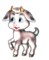
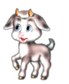

Моя личная страничка
Привет! Я Вероника. Я работаю фронтендером, по образованию я химик. Я нежно люблю красивые дизайны, приятные шрифты
и естественные науки. Когда-нибудь я создам сайт с красивыми 3D-модельками атомных, молекулярных и ионных решеток.
Со школы я любила преподавать и так я стала фронтендером-преподавателем в Контууе. Я работаю в отделе обучения, и
обучаю классных ребят, которые, надеюсь, станут моими коллегами =)
А ещё я люблю программирование и котиков
Я знаю, что в верстке нужно экранировать вот эти символы:
Рекомендую изучать верстку на следующих ресурсах:
- Справочник по тегам и стилям
- Старая версия справочника
- MDN
Корней Чуковский. Закалялка
Дали Мурочке тетрадь,
Стала Мура рисовать.
 Это — ёлочка мохнатая.

Это — козочка рогатая.
Это — дядя с бородой.
Это — дом с трубой».
«Ну, а это что такое,
Непонятное, чудное,
С десятью ногами,
С десятью рогами?»
«Это Бяка-Закаляка
Кусачая,
Я сама из головы её выдумала».
«Что ж ты бросила тетрадь,
Перестала рисовать?» «Я её боюсь!»
Это — ёлочка мохнатая.

Это — козочка рогатая.
Это — дядя с бородой.
Это — дом с трубой».
«Ну, а это что такое,
Непонятное, чудное,
С десятью ногами,
С десятью рогами?»
«Это Бяка-Закаляка
Кусачая,
Я сама из головы её выдумала».
«Что ж ты бросила тетрадь,
Перестала рисовать?» «Я её боюсь!»